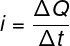
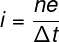
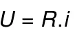
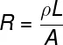
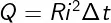
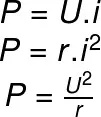

Eletrodinâmica
O que é?
É o ramo da Física que estuda o movimento das cargas elétricas. A movimentação dessas cargas é obtida quando se aplica uma diferença de potencial elétrico entre dois pontos de um meio condutor. A resistência do meio é a propriedade física que quantifica a facilidade em que uma corrente elétrica é conduzida em seu interior. Além disso, a corrente elétrica é uma das grandezas fundamentais da eletrodinâmica.
Conceitos
Condutores e Isolantes
Existem materiais que são capazes de conduzir cargas elétricas com relativa facilidade. Esses materiais são chamados de condutores. Em contrapartida, existem materiais que se opõem à condução da corrente elétrica, são os chamados isolantes ou dielétricos.
Corrente Elétrica
A corrente elétrica, que é a movimentação das cargas, é calculada pela quantidade de cargas que atravessam a secção reta de um condutor a cada segundo. A unidade de medida da corrente elétrica no Sistema Internacional (SI) é o ampére. Sua fórmula é a seguinte:
Onde:
i é a corrente elétrica (A)
ΔQ é a carga elétrica (C)
Δt é o intervalo de tempo (s)
Nos materiais condutores, a corrente elétrica é produzida pela movimentação de elétrons. Essas partículas são dotadas de carga elétrica negativa de módulo igual a 1,6.10-19 C, conhecida como carga elétrica fundamental. Uma vez que a corrente elétrica é formada por elétrons, ela pode ser escrita da seguinte maneira:
Onde:
n é o número de elétrons
e é a carga elétrica fundamental (1,6 . 10-19)
Resistência Elétrica
A intensidade da corrente elétrica formada depende de uma característica do corpo chamada resistência elétrica. Corpos cuja resistência elétrica é constante, independentemente de qual tensão venha a ser aplicada sobre ele, são chamados de ôhmicos. Esses corpos obedecem à 1ª lei de Ohm, descrita pela seguinte fórmula:

Onde:
U corresponde à tensão elétrica
R corresponde à resistência elétrica
A resistência elétrica depende de fatores geométricos, como o comprimento e a área transversal do condutor. Isso é explicitado matematicamente por meio da 2ª lei de Ohm:
Onde:
L é o comprimento do corpo
A é a área transversavl (m2)
p é a resistividade (Ω.m)
Resistividaae
A resistividade, denotada pelo símbolo ρ, é uma propriedade microscópica própria do material. Quanto maior é a resistividade, maior é a resistência elétrica do corpo. Dessa maneira, materiais apresentam baixa resistividade.
A fórmula utilizada para calcular a resitividade envolve grandezas microscópicas e conhecimentos avançados da teoria eletromagnética, por isso, no Ensino Médio, não costumamos calculá-la, mas apenas utilizar o seu módulo, quando informado pelos exercícios.
Efeito Joule
Quando a corrente elétrica percorre um material isolante, dizemos que ocorreu uma ruptura dielétrica. Quando um material isolante passa a conduzir eletricidade, uma grande quantidade de calor é produzida, devido à dificuldade que a corrente elétrica encontra ao passar entre os átomos do material. Esse fenômeno de produção de calor, conhecido como Efeito Joule, é largamente explorado em aquecedores, chuveiros, panelas elétricas etc. A fórmula do Efeito Joule permite que calculemos a quantidade de energia elétrica que é dissipada em energia térmica. Para tanto, relacionamos grandezas como resistência, corrente elétrica e intervalo de tempo. Observe:
Onde:
Q é a quantidade de energia transformada em calor (J)
R é a resistência elétrica
Potência Elétrica
Se desejarmos calcular qual foi a quantidade de energia convertida em calor em razão do efeito Joule, é preciso determinar qual é a potência elétrica dissipada. Potência é uma grandeza que mede a taxa de transferência de energia. Sua unidade de medida é o watt, que equivale a joule por segundo.
Onde:
P é a potência elétrica (W)
r é a resistência elétrica (Ω)
Como a Eletrodinâmica é abordada no ENEM?
A eletrodinâmica é o segundo assunto mais popular entre as questões do Enem, por isso, quando for se preparar para o exame, os principais tópicos que devem ser estudados são:
Leis de Ohm – 1ª lei de Ohm e 2ª lei de Ohm;
Associação de resistores;
Geradores elétricos;
Potência elétrica.